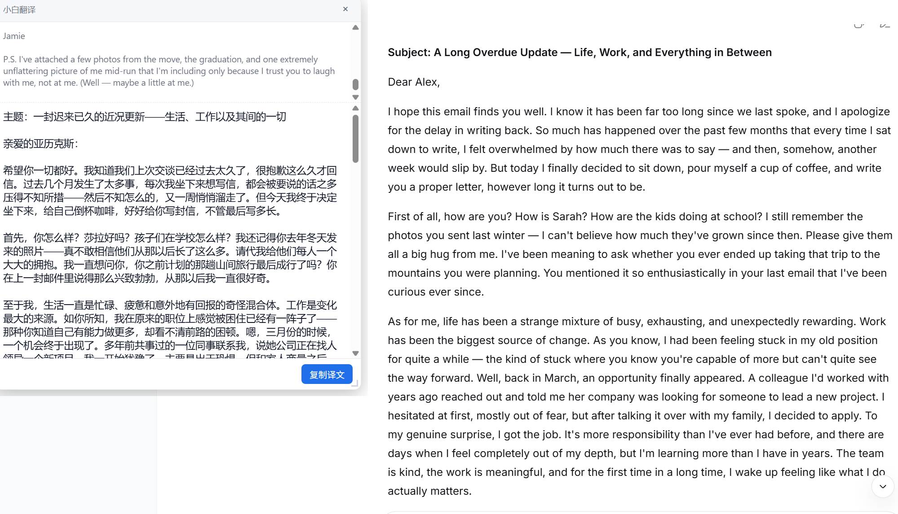
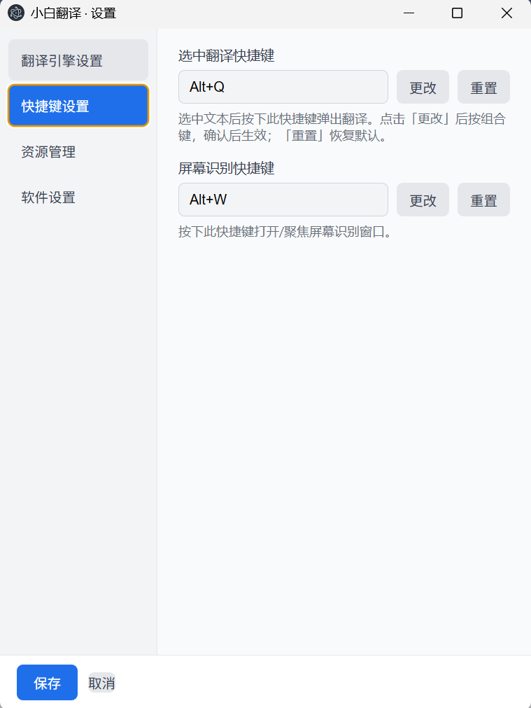
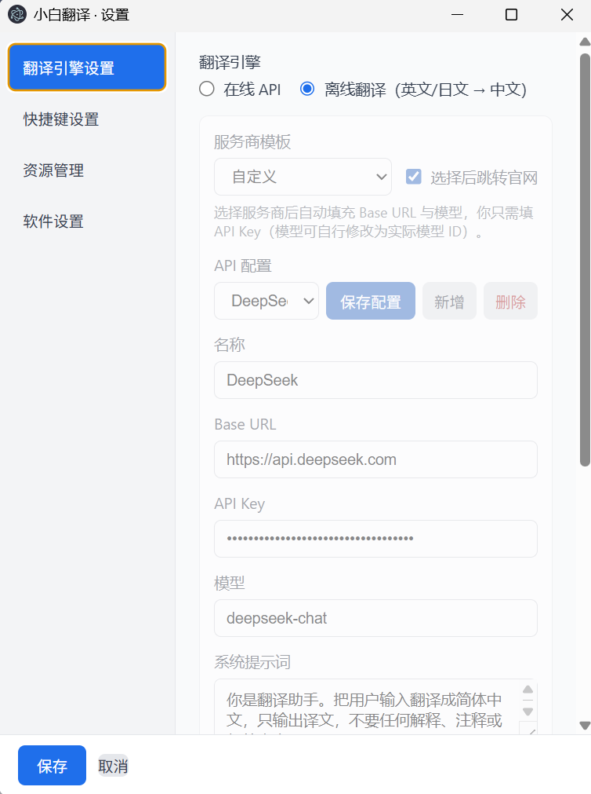
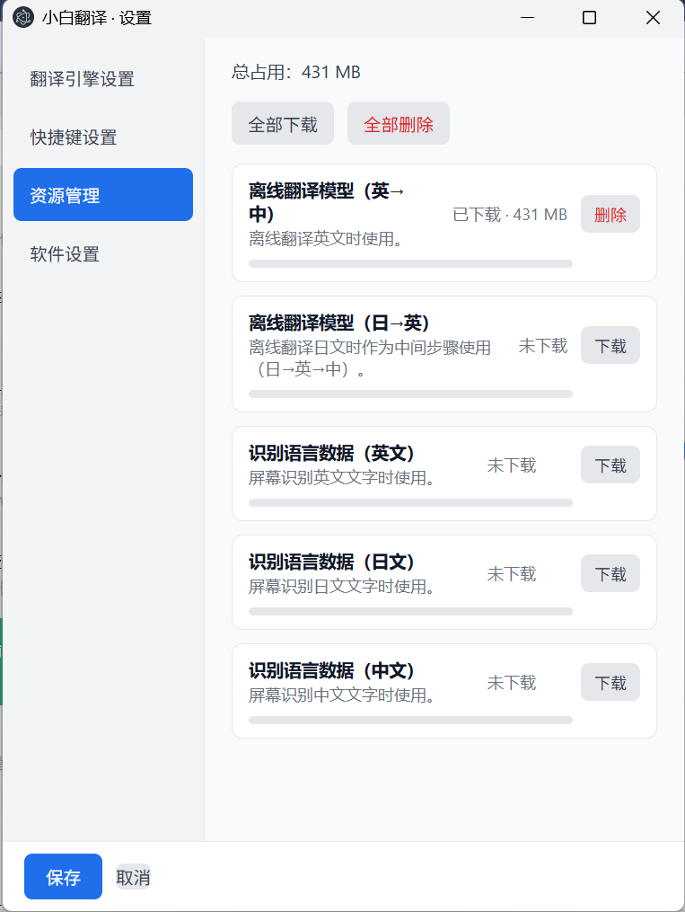

划词即译 · 屏幕即译
一款轻量、顺手的 Windows 桌面翻译工具
选中任意文字，按下快捷键（默认 Alt+Q），鼠标旁立刻弹出翻译。
图片、PDF、游戏里无法选中的文字？用透明识别框框住，一键识别并翻译。
内置离线引擎（英文 / 日文 → 中文），没网也能翻译。
支持 DeepSeek、OpenAI、Kimi、通义千问等多家服务商，可自由配置。
一键切换显示原文或译文，并支持复制译文。
引擎开关、快捷键、边框颜色、模型资源、多套 API 配置都能按需设置。




当前版本 v0.1.0 · Windows x64 · 安装包约 170MB
便携版及其它版本见 GitHub Releases。
遇到问题或有建议？欢迎到我的哔哩哔哩主页发私信反馈。
去 B 站私信反馈